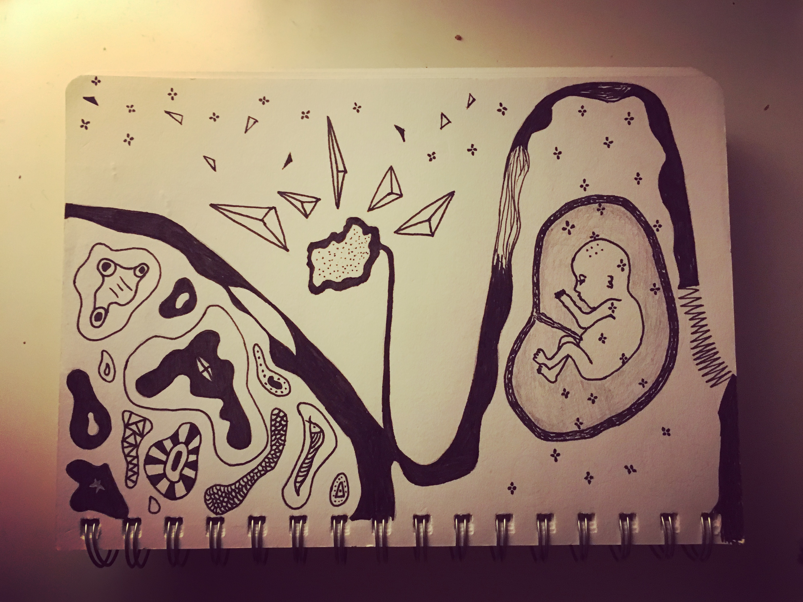
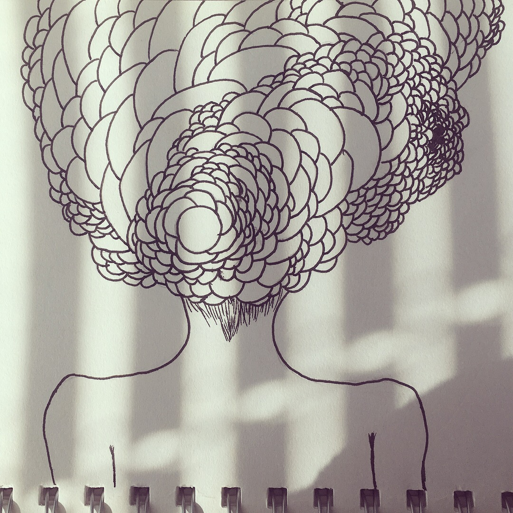
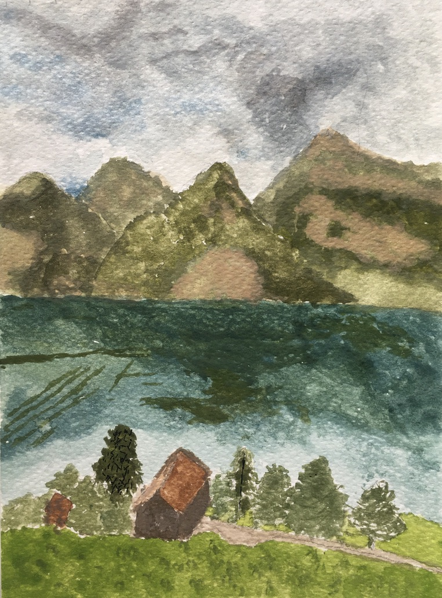
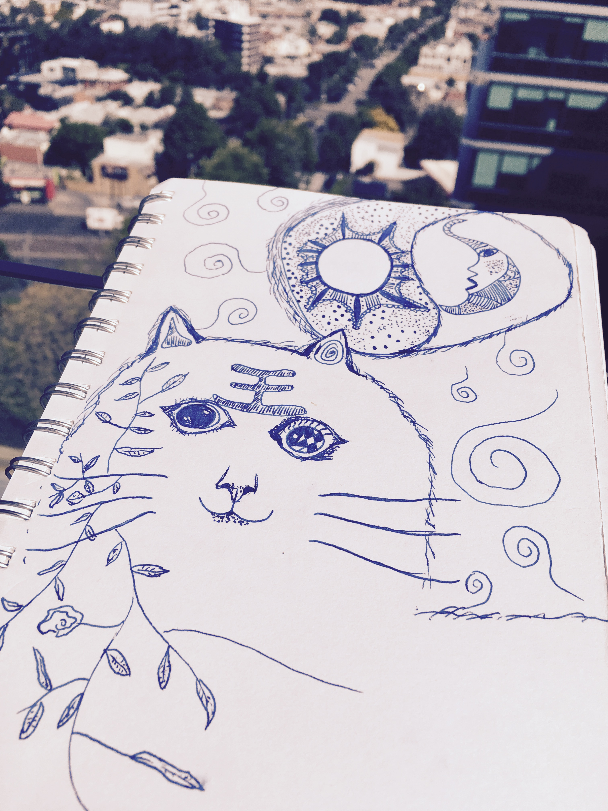

Hi there, my name’s Lu. I am a multidisciplinary designer with a diverse background and an aspiration to create engaging experiences and digital products that matter. Improve people's lives one iteration at a time.
I have a background in social work prior to diving in the world of UX design. I believe social workers and UX designers share the common ground of solving real world problems by placing people at the centre of their work.
My initiate interests in understanding how human think and interact lead me to the field human centric design. More than understanding people, the possibilities of using design and tech to solve human problems are even more exciting. In my Master's Degree of Interaction Design and Electronic Arts, I’ve worked on a few cool and exciting projects. In the recent project, I designed an interactive digital installation for COVID19 that aimed to bring a sense of hope and healing to the world. Through this project, I learned that it is essential for people to feel connected and supported during the time of a global crisis.
In my free time, I love to explore both externally and internally. I travel to explore externally. Travelling for me is not about going somewhere to take pretty photos, but to experience another way of living. I use music, art and writing to fill my inner jar of curiosity. Through playing music, I express myself freely. Currently I work on a few original songs. I also write poetry and love when words rhyme and flow as if they’re music notes.
Previous: UX Design Intern @ Braingaze. Current: UX research at USYD. Feel free to reach out via email or LinkedIn
Art
   Music
Verse 1
The gentle breeze teases her summer dress
Coconuts fall on the snow white beach
We sing and dance over the summer night
Where everything will be
All right
Oh life, she’s a beautiful summer night
Verse 2
Wrapped in wool scarf I sat on a night tram
Memories flash back and forth
It’s time for reflection
With no hesitation
I wondered about life’s intention
Oh life, She’s a beautiful intention
Verse 3
The spring rain showers on his face
Hills go up and down in her far away hometown
It’s the time of the year we sit in backyard
When mum’s cooking
In our house upstairs
Oh life, she’s in my house upstairs